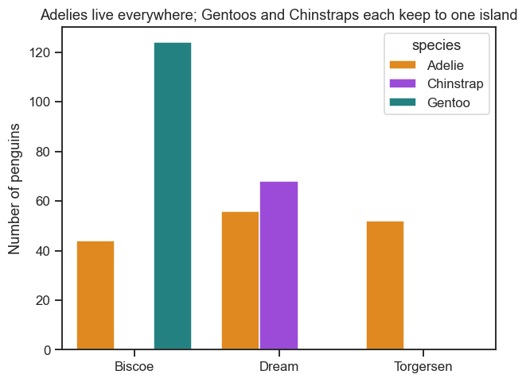
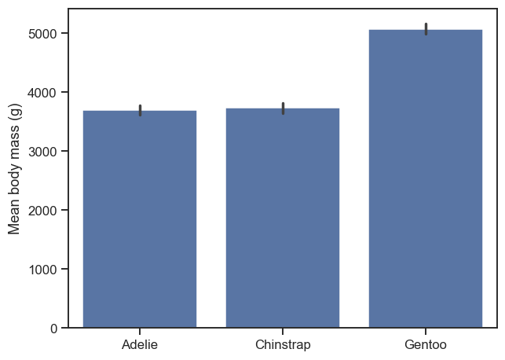
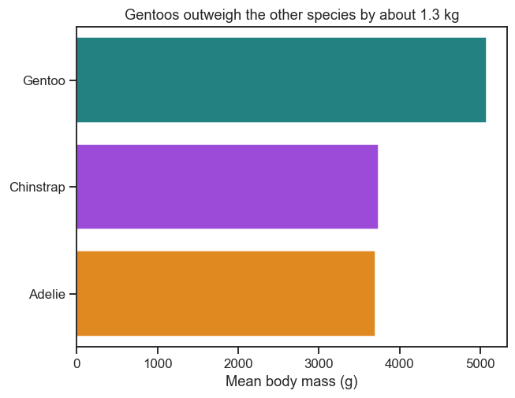
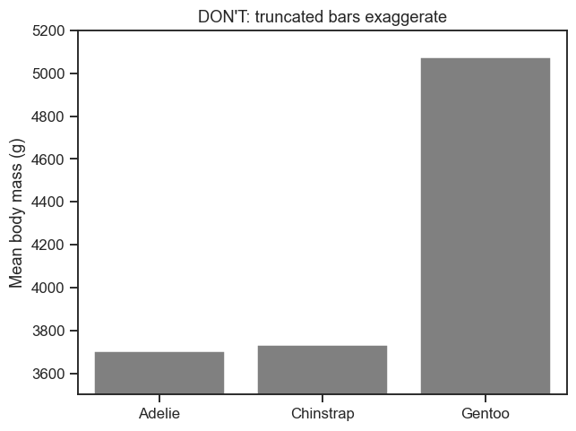
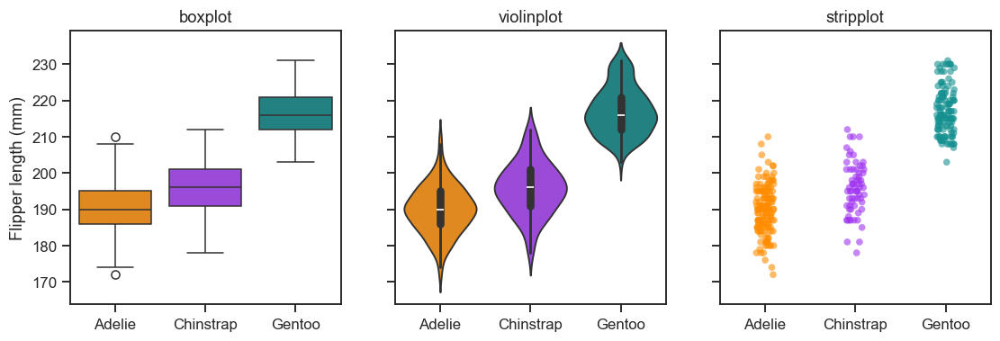
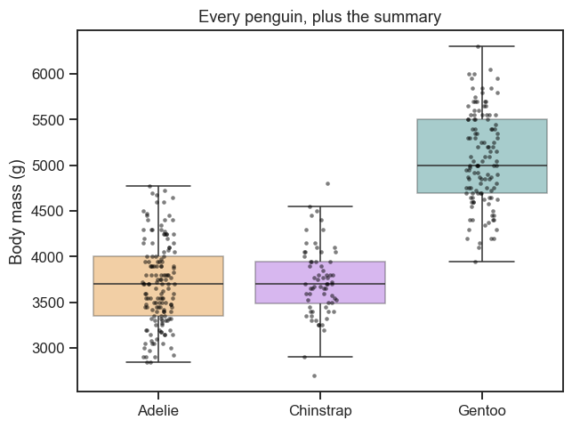
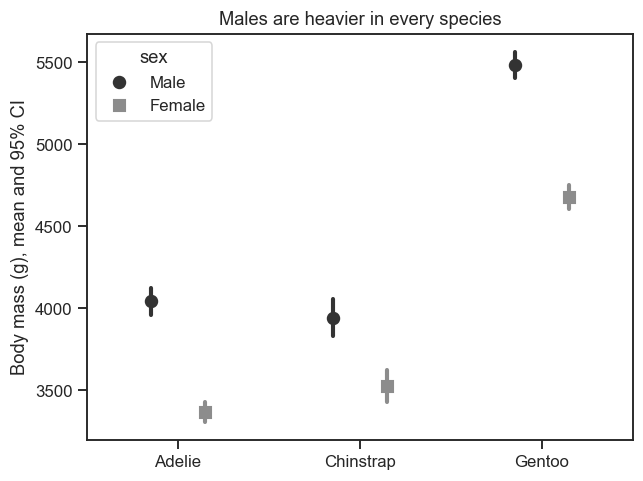
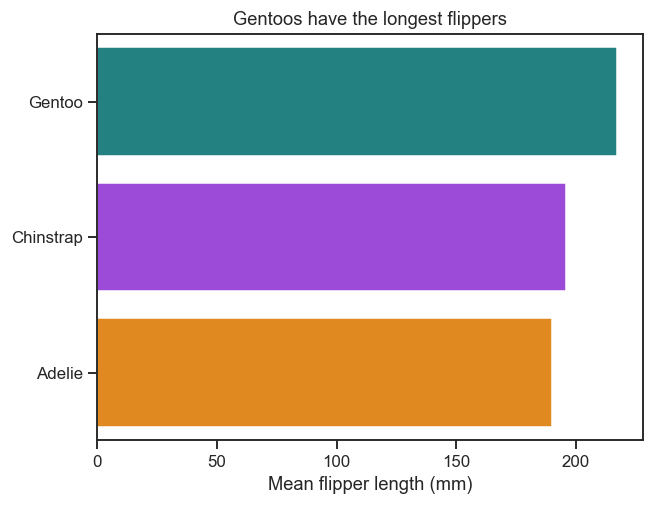
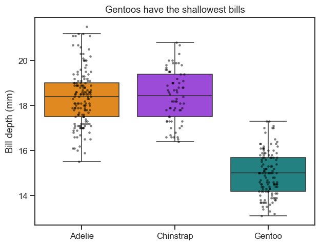

Lesson 3 - Comparing categories: bars, boxes and dots
Which island has the most penguins? Which species is heaviest? Questions about groups are the bread and butter of everyday charts, and also where most chart crimes happen.
By the end of this lesson you can:
- count categories with
countplot - summarize a number per group with
barplot, and read its error bars - sort and orient bars so the ranking reads at a glance
- show whole distributions per group with box, violin and strip plots
- use
pointplotwhen a zero baseline isn’t meaningful
import pandas as pd
import matplotlib.pyplot as plt
import seaborn as sns
sns.set_theme(style="ticks")
penguins = sns.load_dataset("penguins")
PENGUIN_COLORS = {"Adelie": "#FF8C00", "Chinstrap": "#A034F0", "Gentoo": "#159090"}
SEX_COLORS = {"Female": "#8c8c8c", "Male": "#333333"}
Counting: who lives where?
island_order = penguins["island"].value_counts().index # most to fewest penguins
ax = sns.countplot(data=penguins, x="island", hue="species", palette=PENGUIN_COLORS,
order=island_order)
ax.set(xlabel="", ylabel="Number of penguins",
title="Adelies live everywhere; Gentoos and Chinstraps each keep to one island")

Here’s a fun fact the chart makes obvious: Gentoos were only found on Biscoe and Chinstraps only on Dream, while Adelies live on all three islands. countplot is just a bar chart of value_counts(). Two small decisions already make it easier to read. order= lists the islands from busiest to quietest (value_counts() is already sorted, so its index is a ready-made order). Without it, seaborn uses the order in which the islands first appear in the data, which means nothing to a reader. And the x-label is blank: “island” adds nothing when the tick labels are island names.
Bars for a summary statistic
barplot computes a statistic per group (the mean by default) and draws it as a bar:
ax = sns.barplot(data=penguins, x="species", y="body_mass_g")
ax.set(xlabel="", ylabel="Mean body mass (g)")

The black lines are error bars. By default they show a 95% confidence interval for the mean, found by bootstrapping. Control them with errorbar=:
errorbar= |
Shows | Use it to say… |
|---|---|---|
("ci", 95) (default) |
uncertainty of the mean | “how precisely do we know the average?” |
"sd" |
standard deviation of the data | “how spread out are individual penguins?” |
("pi", 50) |
the middle 50% of the data | “where do typical penguins fall?” |
None |
nothing | when the bars alone tell the story |
Always say which one you used in a caption or title. “Error bar” on its own means nothing to a reader.
Make the ranking obvious: sort and turn sideways
order = (penguins.groupby("species")["body_mass_g"]
.mean().sort_values(ascending=False).index)
ax = sns.barplot(data=penguins, y="species", x="body_mass_g", order=order,
hue="species", palette=PENGUIN_COLORS, errorbar=None)
ax.set(xlabel="Mean body mass (g)", ylabel="",
title="Gentoos outweigh the other species by about 1.3 kg")

Three deliberate choices here:
- Sorted with
order=, so the ranking reads top to bottom. - Horizontal (categorical column on
y), so long labels never need tilting. - Colored by species with a dict, the same colors as in every other lesson. Passing
hue=along withpalette=is how seaborn 0.13 wants it.
Bars must start at zero
A bar encodes its value by its length. Cut the axis and the lengths lie. The chart below starts at 3,500 g and makes the Gentoo bar nearly eight times longer than the Adelie bar, when Gentoos are really only about 1.4 times heavier.
ax = sns.barplot(data=penguins, x="species", y="body_mass_g", errorbar=None, color="gray")
ax.set_ylim(3500, 5200)
ax.set(xlabel="", ylabel="Mean body mass (g)", title="DON'T: truncated bars exaggerate")

If zero isn’t meaningful for your data, don’t use bars. Use points (see pointplot below).
Beyond the mean: boxes, violins and strips
A bar of means hides the spread. These three charts show the whole distribution for each group:
fig, axes = plt.subplots(1, 3, figsize=(12, 3.6), sharey=True)
kw = dict(data=penguins, x="species", y="flipper_length_mm",
hue="species", palette=PENGUIN_COLORS, legend=False)
sns.boxplot(ax=axes[0], **kw)
sns.violinplot(ax=axes[1], **kw)
sns.stripplot(ax=axes[2], alpha=0.6, **kw)
for ax, name in zip(axes, ["boxplot", "violinplot", "stripplot"]):
ax.set(title=name, xlabel="", ylabel="Flipper length (mm)")

- Box plot: the median, the middle 50% (the box), whiskers, and outliers. It’s compact and great for many groups.
- Violin plot: a mirrored KDE. It shows the shape, but carries the KDE’s smoothing caveats.
- Strip plot: every penguin as a dot, with no hiding. It gets crowded with big data.
A strong default for modest data is a box plot with the raw points on top:
ax = sns.boxplot(data=penguins, x="species", y="body_mass_g",
hue="species", palette=PENGUIN_COLORS, legend=False,
fliersize=0, boxprops={"alpha": 0.4})
sns.stripplot(data=penguins, x="species", y="body_mass_g",
color="black", size=3, alpha=0.5, ax=ax)
ax.set(xlabel="", ylabel="Body mass (g)", title="Every penguin, plus the summary")

fliersize=0 hides the box plot’s own outlier dots, because the strip already shows every point.
Point plots: compare when zero isn’t meaningful
ax = sns.pointplot(data=penguins, x="species", y="body_mass_g", hue="sex",
palette=SEX_COLORS, dodge=0.3, linestyle="none", markers=["o", "s"])
ax.set(xlabel="", ylabel="Body mass (g), mean and 95% CI",
title="Males are heavier in every species")

linestyle="none" removes the lines pointplot would otherwise draw between species. Lines imply a continuous path, and there’s nothing “between” an Adelie and a Chinstrap. SEX_COLORS is the second fixed palette from the setup cell: two grays, so a chart about sex never borrows the species colors, and the marker shapes carry the distinction even without color.
Save the pie for dessert
People compare angles and areas poorly but lengths and positions well. A sorted bar or dot chart beats a pie chart for almost any comparison. Seaborn has no pie function, and that’s no accident.
Your turn
Show a solution
order = (penguins.groupby("species")["flipper_length_mm"]
.mean().sort_values(ascending=False).index)
ax = sns.barplot(data=penguins, y="species", x="flipper_length_mm", order=order,
hue="species", palette=PENGUIN_COLORS, errorbar=None)
ax.set(xlabel="Mean flipper length (mm)", ylabel="",
title="Gentoos have the longest flippers")

Show a solution
ax = sns.boxplot(data=penguins, x="species", y="bill_depth_mm",
hue="species", palette=PENGUIN_COLORS, legend=False, fliersize=0)
sns.stripplot(data=penguins, x="species", y="bill_depth_mm",
color="black", size=3, alpha=0.5, ax=ax)
ax.set(xlabel="", ylabel="Bill depth (mm)", title="Gentoos have the shallowest bills")

Quick quiz
Q1. Why must the value axis of a bar chart start at zero?
Q2. By default, what do the black lines on top of sns.barplot bars show?
errorbar=("ci", 95) shows uncertainty in the estimated mean. Use "sd" or ("pi", 50) to show spread of the data instead - and say which you used.Q3. You want to compare the full distribution of flipper length across three species and still see every bird. Which is best?
Q4. What is the main benefit of sorting bars by value (e.g. with order=)?
Key takeaways
countplotcounts.barplotsummarizes. Say what the error bars mean.- Sort bars, lay long labels horizontally, and always start bars at zero.
- Show distributions with box + strip (or violin). Use
pointplotwhen zero isn’t meaningful. - Skip pie charts. Lengths and positions beat angles.